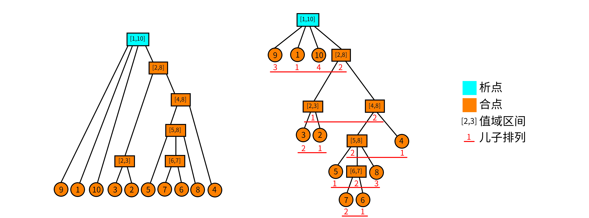
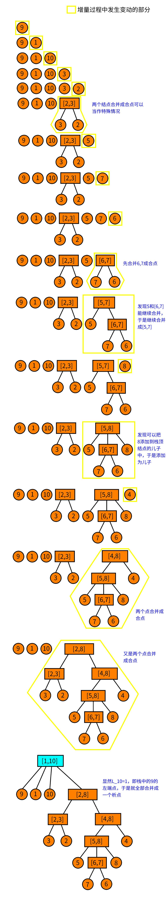

OI Wiki · prijevod · Strukture podatakaOI Wiki · translation · Data structures
Stablo rastavljanja i spajanja (divide-combine tree)Divide-combine tree
Sadržaj
Problem o segmentima
Krenimo od jednog „svježeg” problema:
Za permutaciju brojeva \(1-n\) interval čiji je skup vrijednosti neprekinut nazivamo segmentom. Koliko segmenata ima zadana permutacija? Primjerice, segmenti permutacije \(\{5 ,3 ,4, 1 ,2\}\) jesu: \([1,1],[2,2],[3,3],[4,4],[5,5],[2,3],[4,5],[1,3],[2,5],[1,5]\).
Na prvi pogled trebalo bi održavati skup vrijednosti intervala, a složenost ne izgleda prijateljski. Segment tree može provjeriti je li neki interval segment, ali teško može prebrojati segmente.
Ovdje uvodimo čudesnu strukturu podataka: stablo rastavljanja i spajanja (divide-combine tree)!
Neprekinuti segmenti
Prije nego što opišemo samo stablo, uvedimo nekoliko preduvjeta. Budući da definicije iz LCA-ovih slajdova nisu lako razumljive, radi lakšeg praćenja dajemo neke manje stroge (ali razumljivije) definicije.
Permutacija i neprekinuti segment
Permutacija: permutacija \(P\) reda \(n\) niz je veličine \(n\) u kojem \(P_i\) poprima sve vrijednosti \(1,2,\cdots,n\). Formalnije, permutacija \(P\) reda \(n\) uređeni je skup koji zadovoljava:
- \(|P|=n\).
- \(\forall i,P_i\in[1,n]\).
-
\(\nexists i,j\in[1,n],P_i=P_j\).
Neprekinuti segment: za permutaciju \(P\) neprekinuti segment \((P,[l,r])\) označava interval \([l,r]\) takav da je skup vrijednosti \(P_{l\sim r}\) neprekinut. Formalnije, za permutaciju \(P\) neprekinuti segment je interval \([l,r]\) koji zadovoljava:
Posebno, za \(l>r\) smatramo da je riječ o praznom neprekinutom segmentu, koji označavamo \((P,\varnothing)\).
Skup svih neprekinutih segmenata permutacije \(P\) označavamo \(I_P\) i smatramo da je \((P,\varnothing)\in I_P\).
Operacije nad neprekinutim segmentima
Neprekinuti segmenti definirani su intervalom i skupom vrijednosti, pa možemo definirati presjek, uniju i razliku neprekinutih segmenata.
Neka je \(A=(P,[a,b]),B=(P,[x,y])\) i \(A,B\in I_P\). Odnosi i operacije nad neprekinutim segmentima mogu se zapisati kao:
- \(A\subseteq B\iff x\le a\wedge b\le y\).
- \(A=B\iff a=x\wedge b=y\).
- \(A\cap B=(P,[\max(a,x),\min(b,y)])\).
- \(A\cup B=(P,[\min(a,x),\max(b,y)])\).
- \(A\setminus B=(P,\{i|i\in[a,b]\wedge i\notin[x,y]\})\).
Te su operacije zapravo samo obični presjek, unija i razlika skupova primijenjeni na intervale.
Svojstva neprekinutih segmenata
Neka očita svojstva neprekinutih segmenata. Ako je \(A,B\in I_P,A \cap B \neq \varnothing,A \notin B,B \notin A\), onda vrijedi \(A\cup B,A\cap B,A\setminus B,B\setminus A\in I_P\).
Dokaz? U biti se svodi na presjek, uniju i razliku skupova.
Stablo rastavljanja i spajanja
Dobro, sada dolazimo do glavne stvari. Vjerojatno ste već pogodili: stablo rastavljanja i spajanja upravo je stablo sastavljeno od neprekinutih segmenata. No permutacija može imati čak \(O(n^2)\) neprekinutih segmenata, pa moramo izdvojiti one osnovnije od kojih ćemo sastaviti stablo.
Primitivni segmenti
Puni naziv ovog pojma je primitivni neprekinuti segment, ali autor smatra da je „primitivni segment” sažetije.
Za permutaciju \(P\) primitivni segment \(M\) označava neprekinuti segment iz skupa \(I_P\) za koji ne postoji neprekinuti segment koji ga siječe, a ne sadrži ga i nije njime sadržan. Formalno, \(X\in I_P\) takav da \(\forall A\in I_P,\ X\cap A= (P,\varnothing)\vee X\subseteq A\vee A\subseteq X\).
Skup svih primitivnih segmenata označavamo \(M_P\). Očito je \((P,\varnothing)\in M_P\).
Očito su primitivni segmenti međusobno ili disjunktni ili u odnosu sadržavanja. Također se može primijetiti da se svaki neprekinuti segment može sastaviti od nekoliko međusobno disjunktnih primitivnih segmenata. Najveći primitivni segment cijela je permutacija, koja sadrži sve ostale primitivne segmente, pa primitivni segmenti čine stablastu strukturu koju nazivamo stablo rastavljanja i spajanja. Strože rečeno, stablo rastavljanja i spajanja permutacije \(P\) sastoji se od svih primitivnih segmenata permutacije \(P\).
Nakon tolikih suhoparnih definicija nužna je slika. Promotrimo permutaciju \(P=\{9,1,10,3,2,5,7,6,8,4\}\). Stablo rastavljanja i spajanja sastavljeno od njezinih primitivnih segmenata izgleda ovako:

Na slici nismo označili same primitivne segmente, ali svaki čvor predstavlja jedan primitivni segment. Označen je samo skup vrijednosti svakog primitivnog segmenta. Primjerice, čvor \([5,8]\) predstavlja primitivni segment \((P,[6,9])=\{5,7,6,8\}\). Ostaje pitanje: što su čvorovi rastavljanja i čvorovi spajanja?
Čvorovi rastavljanja i čvorovi spajanja
Dajemo izravno definicije, a o njihovoj ispravnosti raspravljamo poslije.
- Interval vrijednosti: za čvor \(u\) s \([u_l,u_r]\) označavamo njegov interval vrijednosti.
- Niz djece: za čvor \(u\) stabla pretpostavljamo da njegova djeca čine uređeni niz čiji su elementi intervali vrijednosti (pojedinačni broj \(x\) shvaćamo kao interval \([x,x]\)). Taj niz zovemo nizom djece i označavamo \(S_u\).
- Permutacija djece: za niz djece \(S_u\) permutacija dobivena diskretizacijom njegovih elemenata u pozitivne cijele brojeve naziva se permutacija djece. Primjerice, čvor \([5,8]\) ima niz djece \(\{[5,5],[6,7],[8,8]\}\); ako intervale sortiramo i numeriramo, permutacija djece je \(\{1,2,3\}\); slično je permutacija djece čvora \([4,8]\) jednaka \(\{2,1\}\). Permutaciju djece čvora \(u\) označavamo \(P_u\).
- Čvor spajanja: čvor čija je permutacija djece rastuća ili padajuća nazivamo čvorom spajanja. Formalno, čvor koji zadovoljava \(P_u=\{1,2,\cdots,|S_u|\}\) ili \(P_u=\{|S_u|,|S_u-1|,\cdots,1\}\) nazivamo čvorom spajanja. Listovi nemaju permutaciju djece i također ih smatramo čvorovima spajanja.
- Čvor rastavljanja: svaki čvor koji nije čvor spajanja čvor je rastavljanja.
Sa slike se vidi da samo \([1,10]\) nije čvor spajanja, jer je permutacija djece čvora \([1,10]\) jednaka \(\{3,1,4,2\}\).
Svojstva čvorova rastavljanja i spajanja
Imena čvorova rastavljanja i spajanja potječu od njihovih svojstava. Prvo imamo vrlo očito svojstvo: za svaki čvor \(u\) stabla unija intervala iz njegova niza djece jednaka je intervalu vrijednosti čvora \(u\), tj. \(\bigcup_{i=1}^{|S_u|}S_u[i]=[u_l,u_r]\).
Za čvor spajanja \(u\): svaki podinterval njegova niza djece čini neprekinuti segment. Formalno, \(\forall S_u[l\sim r]\) vrijedi \(\bigcup_{i=l}^rS_u[i]\in I_P\).
Za čvor rastavljanja \(u\): nijedan podinterval njegova niza djece duljine veće od 1 (ovdje duljina znači broj elemenata u nizu djece, a ne duljinu intervala indeksa) ne čini neprekinuti segment. Formalno, \(\forall S_u[l\sim r],l<r\) vrijedi \(\bigcup_{i=l}^rS_u[i]\notin I_P\).
Svojstvo čvora spajanja nije teško dokazati. Permutacija djece čvora spajanja ili je rastuća ili padajuća, a intervali vrijednosti nadovezuju se jedan na drugi, pa je svaki neprekinuti podniz (interval) neprekinuti segment.
Svojstvo čvora rastavljanja mnogim je čitateljima manje jasno: zašto nijedan podinterval duljine veće od \(1\) ne čini neprekinuti segment?
Dokaz kontradikcijom. Pretpostavimo da za čvor \(u\) postoji najdulji interval \(S_u[l\sim r]\) u njegovu nizu djece koji čini neprekinuti segment. Tada je \(A=\bigcup_{i=l}^rS_u[i]\in I_P\), što znači da je \(A\) primitivni segment! (Budući da je \(A\) najdulji takav u nizu djece, ne postoji neprekinuti segment koji ga siječe, a ne sadrži ga.) Dakle, stablo nije izgrađeno od svih primitivnih segmenata. Kontradikcija.
Izgradnja stabla
Za konkretnu izgradnju stabla LCA je dao linearni algoritam1; u nastavku dajemo lakše razumljiv algoritam složenosti \(O(n\log n)\).
Inkrementalna metoda
Razmotrimo inkrementalnu metodu. Stogom održavamo šumu rastavljanja i spajanja prvih \(i-1\) elemenata. Ovdje treba posebno naglasiti da šuma rastavljanja i spajanja znači da je u svakom trenutku svaki čvor na stogu ili čvor rastavljanja ili čvor spajanja. Promotrimo sada trenutačni čvor \(P_i\).
- Najprije provjerimo može li postati dijete čvora na vrhu stoga; ako može, postaje dijete vrha stoga, zatim vrh skidamo sa stoga i on postaje trenutačni čvor. Postupak ponavljamo dok stog ne postane prazan ili čvor ne može postati dijete vrha stoga.
- Ako ne može postati dijete vrha stoga, provjerimo može li se nekoliko uzastopnih čvorova s vrha stoga spojiti u jedan čvor (način provjere opisan je poslije); spojeni čvor postaje trenutačni čvor.
- Ponavljamo gornji postupak dok je to moguće. Zatim završavamo ovaj korak i trenutačni čvor stavljamo na stog.
Objasnimo to detaljnije.
Konkretna strategija
Smatramo da, ako trenutačni čvor može postati dijete vrha stoga, vrh stoga mora biti čvor spajanja. Da je čvor rastavljanja, nakon spajanja taj bi čvor rastavljanja imao neprekinuti podsegment, što krši svojstvo čvora rastavljanja. Dakle, to je sigurno čvor spajanja.
Ako ne može postati dijete vrha stoga, provjeravamo može li se nekoliko uzastopnih čvorova s vrha stoga spojiti s trenutačnim čvorom. Neka je \(l\) lijevi kraj intervala trenutačnog čvora. Računamo \(L_i\): najveću vrijednost lijevog kraja \(< l\) među neprekinutim segmentima čiji je desni kraj indeks \(i\). Trenutačni čvor je \(P_i\), a vrh stoga označavamo \(t\).
- Ako \(L_i\) ne postoji, trenutačni čvor očito se ne može spojiti.
- Ako je \(t_l=L_i\), spajaju se dva čvora i rezultat je čvor spajanja.
- Inače na stogu sigurno postoji čvor \(t'\) čiji je lijevi kraj \({t'}_l=L_i\) i tada se čvorovi od trenutačnog do \(t'\) sigurno mogu spojiti u čvor rastavljanja.
Provjera mogućnosti spajanja
Na kraju razmotrimo kako obraditi \(L_i\). Neprekinuti segment \((P,[l,r])\) ekvivalentan je tome da je raspon vrijednosti intervala jednak duljini intervala minus 1, tj.
Budući da je P permutacija, za svaki interval \([l,r]\) vrijedi
Stoga održavamo \(\max_{l\le i\le r}P_i-\min_{l\le i\le r}P_i-(r-l)\), pa je pronalaženje neprekinutog segmenta ekvivalentno upitu za minimum!
S tom idejom lako dolazimo do sljedećeg algoritma. Za trenutačni \(i\) u inkrementalnom postupku održavamo niz \(Q\) koji predstavlja raspon minus duljina intervala \([j,i]\), tj.
Sada želimo znati postoji li među \(1\sim i-1\) najmanji \(j\) takav da je \(Q_j=0\). To je ekvivalentno traženju minimuma \(Q_{1\sim i-1}\). Najmanji takav \(j\) je \(L_i\). Ako ne postoji, \(L_i=i\).
No kad \(i\)-ti korak završi, moramo brzo ažurirati niz \(Q\) na stanje za i+1. Interval se mijenja iz \([j,i]\) u \([j,i+1]\); ako je \(P_{i+1}>\max\) ili \(P_{i+1}<\min\), \(Q_j\) se mijenja. Kako? Ako je \(P_{i+1}>\max\), od \(Q_j\) oduzmemo \(\max\) i dodamo \(P_{i+1}\) i ažuriranje \(Q_j\) je gotovo; za \(P_{i+1}<\min\) analogno, \(Q_j=Q_j+\min-P_{i+1}\).
A što ako za interval \([x,y]\) intervali \(P_{x\sim i},P_{x+1\sim i},P_{x+2\sim i},\cdots,P_{y\sim i}\) imaju isti \(\max\)? Već ste shvatili: tada radimo intervalno dodavanje; slično, kad \(P_{x\sim i},P_{x+1\sim i},\cdots,P_{y\sim i}\) imaju isti \(\min\), također je riječ o intervalnom dodavanju. Pritom su ažuriranja \(\max\) i \(\min\) međusobno neovisna, pa se mogu provoditi zasebno.
Održavanje \(Q\) stoga možemo opisati ovako:
- Nađemo najveći \(j\) takav da je \(P_{j}>P_{i+1}\); očito su tada svi brojevi u \(P_{j+1\sim i}\) manji od \(P_{i+1}\), pa treba ažurirati maksimum za \(Q_{j+1\sim i}\). Budući da je \(P_{i},\max(P_i,P_{i-1}),\max(P_i,P_{i-1},P_{i-2}),\cdots,\max(P_i,P_{i-1},\cdots,P_{j+1})\) (nestrogo) monotono rastuće, za svaki odsječak s istim \(\max\) možemo napraviti isto ažuriranje, tj. intervalno dodavanje.
- Ažuriranje \(\min\) analogno.
- Svaki \(Q_j\) umanjimo za \(1\), jer se duljina intervala povećala za \(1\).
- Upit za \(L_i\): upit za indeks na kojem \(Q\) postiže minimum.
Točno tako: \(Q\) možemo održavati segment treeom! Ostaje još pitanje: kako pronaći odsječak u kojem su \(\max/\min\) isti? Monotonim stogom! Održavamo dva monotona stoga, za \(\max\) i za \(\min\). Očito su \(\max/\min\) intervala čiji su krajevi dva susjedna elementa stoga isti, pa pri održavanju monotonih stogova usput ažuriramo segment tree.
Konkretan način održavanja vidi u kodu.
Nakon toliko suhoparnog teksta vjerojatno ste zbunjeni, pa evo slike. Upozorenje: duga slika!

Implementacija
Na kraju dajemo implementaciju za referencu. Kod je preuzet s bloga 大米饼, uz dodane komentare.
#include <algorithm>
#include <cstdio>
using namespace std;
constexpr int N = 200010;
int n, m, a[N], st1[N], st2[N], tp1, tp2, rt;
int L[N], R[N], M[N], id[N], cnt, typ[N], bin[20], st[N], tp;
// izvorni zadatak za ovaj kod je CERC2017 Intrinsic Interval
// niz a je permutacija iz zadatka
// st1 i st2 su dva monotona stoga, tp1 i tp2 njihovi vrhovi, rt je korijen stabla
// nizovi L i R su lijevi i desni kraj čvora stabla, uloga niza M opisana je pri izgradnji stabla
// id pamti indeks čvora koji odgovara položaju u permutaciji, typ označava je li čvor rastavljanja ili spajanja
// st je stog indeksa čvorova stabla, tp njegov vrh
struct RMQ { // predobrada RMQ (Max & Min)
int lg[N], mn[N][17], mx[N][17];
void chkmn(int& x, int y) {
if (x > y) x = y;
}
void chkmx(int& x, int y) {
if (x < y) x = y;
}
void build() {
for (int i = bin[0] = 1; i < 20; ++i) bin[i] = bin[i - 1] << 1;
for (int i = 2; i <= n; ++i) lg[i] = lg[i >> 1] + 1;
for (int i = 1; i <= n; ++i) mn[i][0] = mx[i][0] = a[i];
for (int i = 1; i < 17; ++i)
for (int j = 1; j + bin[i] - 1 <= n; ++j)
mn[j][i] = min(mn[j][i - 1], mn[j + bin[i - 1]][i - 1]),
mx[j][i] = max(mx[j][i - 1], mx[j + bin[i - 1]][i - 1]);
}
int ask_mn(int l, int r) {
int t = lg[r - l + 1];
return min(mn[l][t], mn[r - bin[t] + 1][t]);
}
int ask_mx(int l, int r) {
int t = lg[r - l + 1];
return max(mx[l][t], mx[r - bin[t] + 1][t]);
}
} D;
// održavanje L_i
struct SEG { // segment tree
#define ls (k << 1)
#define rs (k << 1 | 1)
int mn[N << 1], ly[N << 1]; // intervalno dodavanje; intervalni minimum
void pushup(int k) { mn[k] = min(mn[ls], mn[rs]); }
void mfy(int k, int v) { mn[k] += v, ly[k] += v; }
void pushdown(int k) {
if (ly[k]) mfy(ls, ly[k]), mfy(rs, ly[k]), ly[k] = 0;
}
void update(int k, int l, int r, int x, int y, int v) {
if (l == x && r == y) {
mfy(k, v);
return;
}
pushdown(k);
int mid = (l + r) >> 1;
if (y <= mid)
update(ls, l, mid, x, y, v);
else if (x > mid)
update(rs, mid + 1, r, x, y, v);
else
update(ls, l, mid, x, mid, v), update(rs, mid + 1, r, mid + 1, y, v);
pushup(k);
}
int query(int k, int l, int r) { // upit za položaj nule
if (l == r) return l;
pushdown(k);
int mid = (l + r) >> 1;
if (!mn[ls])
return query(ls, l, mid);
else
return query(rs, mid + 1, r);
// ako nula ne postoji, automatski se vraća trenutačno traženi položaj
}
} T;
int o = 1, hd[N], dep[N], fa[N][18];
struct Edge {
int v, nt;
} E[N << 1];
void add(int u, int v) { // dodavanje brida u stablo
E[o] = Edge{v, hd[u]};
hd[u] = o++;
}
void dfs(int u) {
for (int i = 1; bin[i] <= dep[u]; ++i) fa[u][i] = fa[fa[u][i - 1]][i - 1];
for (int i = hd[u]; i; i = E[i].nt) {
int v = E[i].v;
dep[v] = dep[u] + 1;
fa[v][0] = u;
dfs(v);
}
}
int go(int u, int d) {
for (int i = 0; i < 18 && d; ++i)
if (bin[i] & d) d ^= bin[i], u = fa[u][i];
return u;
}
int lca(int u, int v) {
if (dep[u] < dep[v]) swap(u, v);
u = go(u, dep[u] - dep[v]);
if (u == v) return u;
for (int i = 17; ~i; --i)
if (fa[u][i] != fa[v][i]) u = fa[u][i], v = fa[v][i];
return fa[u][0];
}
// provjera je li trenutačni interval neprekinuti segment
bool judge(int l, int r) { return D.ask_mx(l, r) - D.ask_mn(l, r) == r - l; }
// izgradnja stabla
void build() {
for (int i = 1; i <= n; ++i) {
// monotoni stog
// minimum na intervalu [st1[tp1-1]+1,st1[tp1]] jest a[st1[tp1]]
// sada ga skidamo sa stoga, što znači da previše oduzeti Min treba vratiti.
// list segment treea na položaju j održava, od j do trenutačnog i,
// Max{j,i}-Min{j,i}-(i-j)
// intervalno dodavanje samo je oznaka (tag).
// svrha monotonog stoga jest pomoći segment treeu pri ažuriranju s i-1 na i.
// nakon ažuriranja na i dovoljno je upitati globalni minimum da bismo znali postoji li rješenje
while (tp1 && a[i] <= a[st1[tp1]]) // monotono rastući stog, održava Min
T.update(1, 1, n, st1[tp1 - 1] + 1, st1[tp1], a[st1[tp1]]), tp1--;
while (tp2 && a[i] >= a[st2[tp2]])
T.update(1, 1, n, st2[tp2 - 1] + 1, st2[tp2], -a[st2[tp2]]), tp2--;
T.update(1, 1, n, st1[tp1] + 1, i, -a[i]);
st1[++tp1] = i;
T.update(1, 1, n, st2[tp2] + 1, i, a[i]);
st2[++tp2] = i;
id[i] = ++cnt;
L[cnt] = R[cnt] = i; // ovdje su L,R lijevi i desni kraj intervala koji odgovara čvoru
int le = T.query(1, 1, n), now = cnt;
while (tp && L[st[tp]] >= le) {
if (typ[st[tp]] && judge(M[st[tp]], i)) {
// provjera može li postati dijete; ako može, učinimo to
R[st[tp]] = i, M[st[tp]] = L[now], add(st[tp], now), now = st[tp--];
} else if (judge(L[st[tp]], i)) {
typ[++cnt] = 1; // čvor spajanja uvijek nastaje ovako
L[cnt] = L[st[tp]], R[cnt] = i, M[cnt] = L[now];
// niz M pamti lijevi kraj krajnjeg desnog djeteta čvora, za gornju provjeru može li postati dijete
add(cnt, st[tp--]), add(cnt, now);
now = cnt;
} else {
add(++cnt, now); // stvaramo novi čvor i dodajemo now kao dijete
// ako od trenutačnog čvora ne možemo dobiti neprekinuti segment, spajamo
// sve dok ne nađemo čvor s kojim nastaje neprekinuti segment; takav
// čvor sigurno postoji.
do add(cnt, st[tp--]);
while (tp && !judge(L[st[tp]], i));
L[cnt] = L[st[tp]], R[cnt] = i, add(cnt, st[tp--]);
now = cnt;
}
}
st[++tp] = now; // kraj koraka, trenutačni čvor stavljamo na stog
T.update(1, 1, n, 1, i, -1); // desni kraj intervala pomaknuo se za jedno mjesto, pa sve umanjujemo za 1
}
rt = st[1]; // čvor koji na kraju ostane na stogu je korijen
}
// razlikujemo je li lca čvor rastavljanja ili spajanja; listove smatramo čvorovima rastavljanja
void query(int l, int r) {
int x = id[l], y = id[r];
int z = lca(x, y);
if (typ[z] & 1)
l = L[go(x, dep[x] - dep[z] - 1)], r = R[go(y, dep[y] - dep[z] - 1)];
// čvor spajanja posebno obrađujemo jer on nije nužno najmanji neprekinuti segment koji sadrži l i r;
// naime, i podintervali intervala čvora spajanja neprekinuti su segmenti, a nama je dovoljan jedan od njih.
else
l = L[z], r = R[z];
printf("%d %d\n", l, r);
}
int main() {
scanf("%d", &n);
for (int i = 1; i <= n; ++i) scanf("%d", &a[i]);
D.build();
build();
dfs(rt);
scanf("%d", &m);
for (int i = 1; i <= m; ++i) {
int x, y;
scanf("%d%d", &x, &y);
query(x, y);
}
return 0;
}
// 20190612
// stablo rastavljanja i spajanja
Literatura i poveznice
-
刘承奥. 简单的连续段数据结构. WC2019 营员交流. ↩
A problem about segments
Let us start with a "refreshing" little problem:
For a permutation of \(1-n\), we call an interval whose set of values is contiguous a segment. How many segments does a permutation have? For example, the segments of \(\{5 ,3 ,4, 1 ,2\}\) are: \([1,1],[2,2],[3,3],[4,4],[5,5],[2,3],[4,5],[1,3],[2,5],[1,5]\).
At first sight we would have to maintain the value set of intervals, and the complexity does not look friendly. A segment tree can check whether a given interval is a segment, but it cannot really count the segments.
Here we introduce a magical data structure: the divide-combine tree!
Contiguous segments
Before introducing the divide-combine tree, let us fix some prerequisites. Since the definitions given in LCA's slides are not easy to understand, for the reader's convenience we give some less rigorous (but easier to understand) definitions.
Permutations and contiguous segments
Permutation: a permutation \(P\) of order \(n\) is a sequence of size \(n\) such that \(P_i\) takes every value in \(1,2,\cdots,n\). More formally, a permutation \(P\) of order \(n\) is an ordered set satisfying:
- \(|P|=n\).
- \(\forall i,P_i\in[1,n]\).
-
\(\nexists i,j\in[1,n],P_i=P_j\).
Contiguous segment: for a permutation \(P\), a contiguous segment \((P,[l,r])\) denotes an interval \([l,r]\) such that the set of values of \(P_{l\sim r}\) is contiguous. More formally, for a permutation \(P\), a contiguous segment is an interval \([l,r]\) satisfying:
In particular, when \(l>r\) we consider it an empty contiguous segment, denoted \((P,\varnothing)\).
We call the set of all contiguous segments of a permutation \(P\) \(I_P\), and we consider \((P,\varnothing)\in I_P\).
Operations on contiguous segments
Contiguous segments are defined by an interval and a value set, so we can define the intersection, union and difference of contiguous segments.
Let \(A=(P,[a,b]),B=(P,[x,y])\) with \(A,B\in I_P\). The relations and operations on contiguous segments can be written as:
- \(A\subseteq B\iff x\le a\wedge b\le y\).
- \(A=B\iff a=x\wedge b=y\).
- \(A\cap B=(P,[\max(a,x),\min(b,y)])\).
- \(A\cup B=(P,[\min(a,x),\max(b,y)])\).
- \(A\setminus B=(P,\{i|i\in[a,b]\wedge i\notin[x,y]\})\).
These operations are just the ordinary set intersection, union and difference applied to intervals.
Properties of contiguous segments
Some obvious properties of contiguous segments. If \(A,B\in I_P,A \cap B \neq \varnothing,A \notin B,B \notin A\), then \(A\cup B,A\cap B,A\setminus B,B\setminus A\in I_P\).
Proof? It essentially boils down to set intersection, union and difference.
Divide-combine tree
Good, now we come to the main point. You may have guessed already: the divide-combine tree is exactly a tree made of contiguous segments. But a permutation may have as many as \(O(n^2)\) contiguous segments, so we have to extract the more basic ones to form the divide-combine tree.
Primitive segments
The full name of this concept is primitive contiguous segment, but the author finds "primitive segment" more concise.
For a permutation \(P\), a primitive segment \(M\) is a contiguous segment in the set \(I_P\) for which there is no contiguous segment that intersects it without containing it or being contained in it. Formally, \(X\in I_P\) such that \(\forall A\in I_P,\ X\cap A= (P,\varnothing)\vee X\subseteq A\vee A\subseteq X\).
The set of all primitive segments is \(M_P\). Obviously \((P,\varnothing)\in M_P\).
Clearly, primitive segments are pairwise either disjoint or nested. You will also notice that a contiguous segment can be composed of several pairwise disjoint primitive segments. The largest primitive segment is the whole permutation, which contains all other primitive segments, so the primitive segments form a tree structure, which we call the divide-combine tree. More strictly, the divide-combine tree of a permutation \(P\) consists of all primitive segments of \(P\).
After so many dry definitions, we need a picture. Consider the permutation \(P=\{9,1,10,3,2,5,7,6,8,4\}\). The divide-combine tree formed by its primitive segments is as follows:
In the figure we did not mark the primitive segments themselves, but every node represents a primitive segment. We only marked the value range of each primitive segment. For example, the node \([5,8]\) represents the primitive segment \((P,[6,9])=\{5,7,6,8\}\). This raises a question: what are divide nodes and combine nodes?
Divide nodes and combine nodes
We give the definitions directly and discuss their correctness afterwards.
- Value interval: for a node \(u\), \([u_l,u_r]\) denotes the value interval of that node.
- Child sequence: for a node \(u\) of the divide-combine tree, suppose its children form an ordered sequence whose elements are value intervals (a single number \(x\) is understood as the interval \([x,x]\)). We call this sequence the child sequence, denoted \(S_u\).
- Child permutation: for a child sequence \(S_u\), the permutation obtained by discretizing its elements into positive integers is called the child permutation. For example, the node \([5,8]\) has child sequence \(\{[5,5],[6,7],[8,8]\}\); sorting and numbering the intervals, its child permutation is \(\{1,2,3\}\); similarly, the child permutation of node \([4,8]\) is \(\{2,1\}\). The child permutation of node \(u\) is denoted \(P_u\).
- Combine node: a node whose child permutation is increasing or decreasing is called a combine node. Formally, a node satisfying \(P_u=\{1,2,\cdots,|S_u|\}\) or \(P_u=\{|S_u|,|S_u-1|,\cdots,1\}\) is called a combine node. Leaves have no child permutation, and we also consider them combine nodes.
- Divide node: any node that is not a combine node is a divide node.
From the figure we can see that only \([1,10]\) is not a combine node, because the child permutation of \([1,10]\) is \(\{3,1,4,2\}\).
Properties of divide nodes and combine nodes
The names of divide nodes and combine nodes come from their properties. First we have a very obvious property: for any node \(u\) of the divide-combine tree, the union of the intervals in its child sequence is the value interval of node \(u\), i.e. \(\bigcup_{i=1}^{|S_u|}S_u[i]=[u_l,u_r]\).
For a combine node \(u\): any subinterval of its child sequence forms a contiguous segment. Formally, \(\forall S_u[l\sim r]\), \(\bigcup_{i=l}^rS_u[i]\in I_P\).
For a divide node \(u\): any subinterval of its child sequence of length greater than 1 (length here means the number of elements of the child sequence, not the length of the index interval) does not form a contiguous segment. Formally, \(\forall S_u[l\sim r],l<r\), \(\bigcup_{i=l}^rS_u[i]\notin I_P\).
The property of combine nodes is not hard to prove. The child permutation of a combine node is either increasing or decreasing, and the value intervals are joined end to end, so any contiguous subsequence (interval) is a contiguous segment.
Many readers may find the property of divide nodes harder to understand: why does no subinterval of length greater than \(1\) form a contiguous segment?
Proof by contradiction. Suppose that for a node \(u\) there is a longest interval \(S_u[l\sim r]\) in its child sequence that forms a contiguous segment. Then \(A=\bigcup_{i=l}^rS_u[i]\in I_P\), which means \(A\) is a primitive segment! (Since \(A\) is the longest such in the child sequence, there is no contiguous segment that intersects it without containing it.) So the divide-combine tree was not built from all primitive segments. Contradiction.
Constructing the divide-combine tree
For the concrete construction of the divide-combine tree, LCA gave a linear-time algorithm1; below we give an easier-to-understand \(O(n\log n)\) algorithm.
Incremental method
Consider an incremental method. We maintain with a stack the divide-combine forest formed by the first \(i-1\) elements. Here it must be particularly emphasized that a divide-combine forest means that at any time the nodes on the stack are either divide nodes or combine nodes. Now consider the current node \(P_i\).
- First we check whether it can become a child of the node at the top of the stack; if it can, it becomes a child of the top, then we pop the top and treat it as the current node. Repeat this process until the stack is empty or the node cannot become a child of the top.
- If it cannot become a child of the top, we check whether several consecutive nodes at the top of the stack can be merged into one node (the method of checking is described later); the merged node becomes the current node.
- Repeat the process above until no more steps are possible. Then finish this increment and push the current node onto the stack.
Let us explain in detail.
The concrete strategy
We claim that if the current node can become a child of the top of the stack, then the top is a combine node. If it were a divide node, after merging that divide node would contain a contiguous subsegment, violating the property of divide nodes. Hence it must be a combine node.
If it cannot become a child of the top, we check whether several consecutive nodes at the top of the stack can be merged together with the current node. Let \(l\) be the left endpoint of the interval of the current node. We compute \(L_i\): the largest left endpoint \(< l\) among the contiguous segments whose right endpoint index is \(i\). The current node is \(P_i\) and the top of the stack is denoted \(t\).
- If \(L_i\) does not exist, the current node obviously cannot be merged.
- If \(t_l=L_i\), two nodes are merged and the result is a combine node.
- Otherwise there must be a node \(t'\) on the stack whose left endpoint is \({t'}_l=L_i\), and the nodes from the current one down to \(t'\) can certainly be merged into a divide node.
Checking whether merging is possible
Finally, consider how to handle \(L_i\). In fact, a contiguous segment \((P,[l,r])\) is equivalent to the range of the interval being equal to the interval length minus 1, i.e.
Moreover, since P is a permutation, for any interval \([l,r]\) we have
So we maintain \(\max_{l\le i\le r}P_i-\min_{l\le i\le r}P_i-(r-l)\), and finding a contiguous segment amounts to querying a minimum!
With this idea it is easy to come up with the following algorithm. For the current \(i\) in the incremental process, we maintain an array \(Q\) representing the range minus length of the interval \([j,i]\), i.e.
Now we want to know whether among \(1\sim i-1\) there is a smallest \(j\) with \(Q_j=0\). This is equivalent to finding the minimum of \(Q_{1\sim i-1}\). The smallest such \(j\) is \(L_i\). If there is none, \(L_i=i\).
But when the \(i\)-th increment ends, we need to quickly update the array \(Q\) to the situation for i+1. The interval changes from \([j,i]\) to \([j,i+1]\); if \(P_{i+1}>\max\) or \(P_{i+1}<\min\), \(Q_j\) changes. How? If \(P_{i+1}>\max\), we subtract \(\max\) from \(Q_j\) and add \(P_{i+1}\), which completes the update of \(Q_j\); the case \(P_{i+1}<\min\) is analogous, \(Q_j=Q_j+\min-P_{i+1}\).
What if, for an interval \([x,y]\), the intervals \(P_{x\sim i},P_{x+1\sim i},P_{x+2\sim i},\cdots,P_{y\sim i}\) all have the same \(\max\)? You have already noticed: then we are doing a range addition; similarly, when \(P_{x\sim i},P_{x+1\sim i},\cdots,P_{y\sim i}\) all have the same \(\min\), it is also a range addition. Moreover, the updates of \(\max\) and \(\min\) are independent of each other, so they can be performed separately.
Thus the maintenance of \(Q\) can be described as follows:
- Find the largest \(j\) such that \(P_{j}>P_{i+1}\); then obviously all numbers in \(P_{j+1\sim i}\) are smaller than \(P_{i+1}\), so the maximum for \(Q_{j+1\sim i}\) needs to be updated. Since \(P_{i},\max(P_i,P_{i-1}),\max(P_i,P_{i-1},P_{i-2}),\cdots,\max(P_i,P_{i-1},\cdots,P_{j+1})\) is (non-strictly) monotonically increasing, each block with the same \(\max\) can receive the same update, i.e. a range addition.
- Updating \(\min\) is analogous.
- Decrease every \(Q_j\) by \(1\), because the interval length increased by \(1\).
- Query \(L_i\): query the index where \(Q\) attains its minimum.
That's right: we can maintain \(Q\) with a segment tree! One question remains: how do we find the blocks with the same \(\max/\min\)? With monotonic stacks! Maintain two monotonic stacks for \(\max\) and \(\min\) respectively. Obviously the \(\max/\min\) of the interval whose endpoints are two adjacent elements of the stack is the same, so while maintaining the monotonic stacks we update the segment tree along the way.
See the code for the concrete maintenance method.
After so much dry talk you are probably confused, so here is a picture. Long picture warning!
Implementation
Finally, an implementation for reference. The code is taken from 大米饼's blog, with some comments added.
#include <algorithm>
#include <cstdio>
using namespace std;
constexpr int N = 200010;
int n, m, a[N], st1[N], st2[N], tp1, tp2, rt;
int L[N], R[N], M[N], id[N], cnt, typ[N], bin[20], st[N], tp;
// the original problem for this code is CERC2017 Intrinsic Interval
// array a is the permutation from the problem
// st1 and st2 are the two monotonic stacks, tp1 and tp2 their tops, rt is the root of the divide-combine tree
// arrays L and R are the left and right endpoints of a tree node, the role of array M is explained in the construction
// id stores the node index corresponding to a position in the permutation, typ marks divide node vs. combine node
// st is the stack of tree node indices, tp is its top
struct RMQ { // preprocess RMQ (Max & Min)
int lg[N], mn[N][17], mx[N][17];
void chkmn(int& x, int y) {
if (x > y) x = y;
}
void chkmx(int& x, int y) {
if (x < y) x = y;
}
void build() {
for (int i = bin[0] = 1; i < 20; ++i) bin[i] = bin[i - 1] << 1;
for (int i = 2; i <= n; ++i) lg[i] = lg[i >> 1] + 1;
for (int i = 1; i <= n; ++i) mn[i][0] = mx[i][0] = a[i];
for (int i = 1; i < 17; ++i)
for (int j = 1; j + bin[i] - 1 <= n; ++j)
mn[j][i] = min(mn[j][i - 1], mn[j + bin[i - 1]][i - 1]),
mx[j][i] = max(mx[j][i - 1], mx[j + bin[i - 1]][i - 1]);
}
int ask_mn(int l, int r) {
int t = lg[r - l + 1];
return min(mn[l][t], mn[r - bin[t] + 1][t]);
}
int ask_mx(int l, int r) {
int t = lg[r - l + 1];
return max(mx[l][t], mx[r - bin[t] + 1][t]);
}
} D;
// maintain L_i
struct SEG { // segment tree
#define ls (k << 1)
#define rs (k << 1 | 1)
int mn[N << 1], ly[N << 1]; // range addition; range minimum
void pushup(int k) { mn[k] = min(mn[ls], mn[rs]); }
void mfy(int k, int v) { mn[k] += v, ly[k] += v; }
void pushdown(int k) {
if (ly[k]) mfy(ls, ly[k]), mfy(rs, ly[k]), ly[k] = 0;
}
void update(int k, int l, int r, int x, int y, int v) {
if (l == x && r == y) {
mfy(k, v);
return;
}
pushdown(k);
int mid = (l + r) >> 1;
if (y <= mid)
update(ls, l, mid, x, y, v);
else if (x > mid)
update(rs, mid + 1, r, x, y, v);
else
update(ls, l, mid, x, mid, v), update(rs, mid + 1, r, mid + 1, y, v);
pushup(k);
}
int query(int k, int l, int r) { // query the position of a 0
if (l == r) return l;
pushdown(k);
int mid = (l + r) >> 1;
if (!mn[ls])
return query(ls, l, mid);
else
return query(rs, mid + 1, r);
// if there is no 0, the position currently queried is returned automatically
}
} T;
int o = 1, hd[N], dep[N], fa[N][18];
struct Edge {
int v, nt;
} E[N << 1];
void add(int u, int v) { // add an edge to the tree structure
E[o] = Edge{v, hd[u]};
hd[u] = o++;
}
void dfs(int u) {
for (int i = 1; bin[i] <= dep[u]; ++i) fa[u][i] = fa[fa[u][i - 1]][i - 1];
for (int i = hd[u]; i; i = E[i].nt) {
int v = E[i].v;
dep[v] = dep[u] + 1;
fa[v][0] = u;
dfs(v);
}
}
int go(int u, int d) {
for (int i = 0; i < 18 && d; ++i)
if (bin[i] & d) d ^= bin[i], u = fa[u][i];
return u;
}
int lca(int u, int v) {
if (dep[u] < dep[v]) swap(u, v);
u = go(u, dep[u] - dep[v]);
if (u == v) return u;
for (int i = 17; ~i; --i)
if (fa[u][i] != fa[v][i]) u = fa[u][i], v = fa[v][i];
return fa[u][0];
}
// check whether the current interval is a contiguous segment
bool judge(int l, int r) { return D.ask_mx(l, r) - D.ask_mn(l, r) == r - l; }
// build the tree
void build() {
for (int i = 1; i <= n; ++i) {
// monotonic stack
// the minimum on the interval [st1[tp1-1]+1,st1[tp1]] is a[st1[tp1]]
// now we pop it, which means the Min subtracted too much has to be added back.
// the segment tree leaf at position j maintains, from j to the current i,
// Max{j,i}-Min{j,i}-(i-j)
// range addition is just a Tag.
// the purpose of the monotonic stack is to help the segment tree update from i-1 to i.
// after updating to i, querying the global minimum tells us whether a solution exists
while (tp1 && a[i] <= a[st1[tp1]]) // monotonically increasing stack, maintains Min
T.update(1, 1, n, st1[tp1 - 1] + 1, st1[tp1], a[st1[tp1]]), tp1--;
while (tp2 && a[i] >= a[st2[tp2]])
T.update(1, 1, n, st2[tp2 - 1] + 1, st2[tp2], -a[st2[tp2]]), tp2--;
T.update(1, 1, n, st1[tp1] + 1, i, -a[i]);
st1[++tp1] = i;
T.update(1, 1, n, st2[tp2] + 1, i, a[i]);
st2[++tp2] = i;
id[i] = ++cnt;
L[cnt] = R[cnt] = i; // here L,R are the left and right endpoints of the interval of the node
int le = T.query(1, 1, n), now = cnt;
while (tp && L[st[tp]] >= le) {
if (typ[st[tp]] && judge(M[st[tp]], i)) {
// check whether it can become a child; if so, do it
R[st[tp]] = i, M[st[tp]] = L[now], add(st[tp], now), now = st[tp--];
} else if (judge(L[st[tp]], i)) {
typ[++cnt] = 1; // a combine node is always created this way
L[cnt] = L[st[tp]], R[cnt] = i, M[cnt] = L[now];
// array M records the left endpoint of the rightmost child of a node, used for the child check above
add(cnt, st[tp--]), add(cnt, now);
now = cnt;
} else {
add(++cnt, now); // create a new node and add now as its child
// if no contiguous segment can be formed starting from the current node, merge
// until a node forming a contiguous segment is found; such a node
// can always be found.
do add(cnt, st[tp--]);
while (tp && !judge(L[st[tp]], i));
L[cnt] = L[st[tp]], R[cnt] = i, add(cnt, st[tp--]);
now = cnt;
}
}
st[++tp] = now; // increment finished, push the current node
T.update(1, 1, n, 1, i, -1); // the right endpoint moved one step, so decrease everything by 1
}
rt = st[1]; // the node left on the stack at the end is the root
}
// distinguish whether the lca is a divide or combine node; leaves are treated as divide nodes here
void query(int l, int r) {
int x = id[l], y = id[r];
int z = lca(x, y);
if (typ[z] & 1)
l = L[go(x, dep[x] - dep[z] - 1)], r = R[go(y, dep[y] - dep[z] - 1)];
// combine nodes are special-cased because such a node is not necessarily the smallest contiguous segment containing l and r;
// the subintervals of a combine node's interval are also contiguous segments, and we only need one of them.
else
l = L[z], r = R[z];
printf("%d %d\n", l, r);
}
int main() {
scanf("%d", &n);
for (int i = 1; i <= n; ++i) scanf("%d", &a[i]);
D.build();
build();
dfs(rt);
scanf("%d", &m);
for (int i = 1; i <= m; ++i) {
int x, y;
scanf("%d%d", &x, &y);
query(x, y);
}
return 0;
}
// 20190612
// divide-combine tree
References and links
-
刘承奥. 简单的连续段数据结构. WC2019 营员交流. ↩